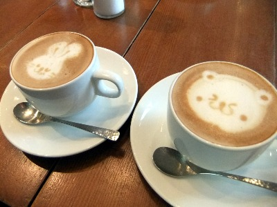
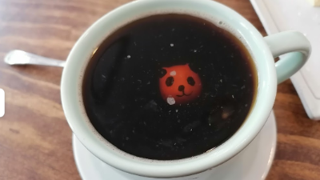
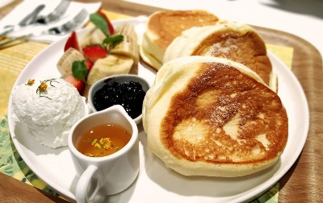
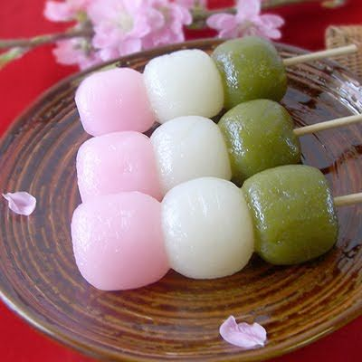
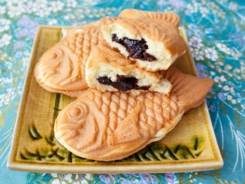
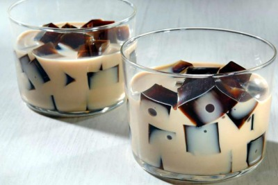

Nisshoku kafe

Menu
Cafe de la casa

Nuestro cafe clasico decorado, es preparado por nuestros baristas con gran diversidad de decoraciones para el disfrute de nuestros clientes.

Cafe al gusto
Ofrecemos a diario una gran variedad de cafes al gusto de cada cliente.

Hottokuraudo
Todas las variedades de hotcakes son deliciosas, pero estos al estilo japonés te van a encantar. Son muy esponjosos e ideales para el desayuno. Se les llama «de estilo japonés» porque usualmente se los acompaña con frutas, cremas, chocolates o helados ¡y además quedan más altos!

Hanami Dango
El dulce tricolor de la primavera El dango es uno de los dulces más populares en Japón y similar al mochi en composición -harina de arroz- aunque con elaboración algo distinta. Sea como sea, el hanami dango es uno de los dulces más representativos y populares de Japón, en cualquier época del año.

Taiyaki
Este pan tiene forma de pez y es común que tenga relleno, ya sea de una pasta de frijoles dulces Azuki, alguna natilla dulces, ingredientes salados o helado.

GelaGelatina
Tenemos una gran variedad de gelatinas preparadas de sabores fuera de lo normal, hechas especialmente para acompañar todas tus comidas siendo una compañera dulce, sutil y ligera.